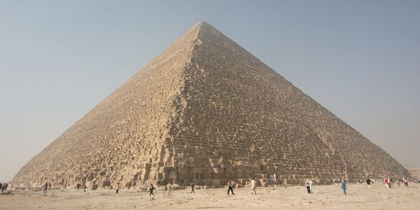

Le Livre des Morts
L'un des grands corpus funéraires de l'Egypte fut hâtivement intitulé par les égyptologues le Livre des Morts. En fait, le titre exact de ces longs rouleaux de papyrus que l'on plaçait, au Nouvel Empire, entre les jambes de la momie, est : Chapitres de la sortie à la Lumière.
Pour les Egyptiens, la lumière est cachée au coeur de ces hiéroglyphes et de ces phrases composés, dit la tradition la plus ancienne, par le divin Thot lui-même et dont l'original se trouvait dans une crypte de son temple d'Hermopolis Magna, sous un bloc très pur de lapis-lazuli servant de socle à la statue de ce dieu de la Connaissance. Parler de lumière est ici synonyme de source, celle où se fait et se défait le noeud de la vie et de la mort. Un lieu de passage en somme, par cette « demeure secrète » où se joue le destin de l'être en devenir. Un destin qui n'est ni fini, ni scellé, l'amorce d'une nouvelle courbe de la spirale.
Historiquement, les textes du Livre des morts apparaissent au début du Nouvel Empire, sous la XVIIe dynastie. La première version est nommée « recension thébaine » car elle fut réalisée dans la ville des princes qui, après avoir chassé les Hyksos, avaient réunifié les deux royaumes et fait de Waset-Thèbes la nouvelle capitale de l'empire.
Comme pour les Textes des Pyramides et des Sarcophages, autres grands corpus funéraires, il ne s'agit pas d'un traité construit selon une idée directrice. On y trouve pêle-mêle des formules éparses, des citations de textes funéraires antérieurs, des recettes magiques, des hymnes,
des préceptes moraux, un guide pour les beaux Chemins de l'Amenti, une méthode pour accomplir ses métamorphoses dans le royaume incertain de la mort.
Selon la logique égyptienne, chacun pouvait puiser dans ce fonds les formules ou les chapitres qui le concernaient plus particulièrement. On ne trouve pas deux Livres des Morts vraiment identiques car une grande place est toujours laissée à la liberté de choix et de création de chaque commanditaire de ces écrits magiques.
Pourtant, il existe une seconde version de ces textes, dite « recension saïte , qui offre un ensemble à peu près fixe de 165 chapitres. Cette recension fut réalisée à l'époque saïte, vers -650, sous le règne du roi Psammétique. Le papyrus de référence est celui d'un certain Ioufankh, actuellement conservé au musée de Turin. La longueur de ces chapitres peut varier de deux lignes à une quinzaine de pages, mais chacun est précédé d'un véritable titre qui donne l'idée essentielle développée. Ainsi le chapitre CXLII s'intitule-t-il : « Livre pour glorifier le bienheureux, faire qu'il chemine en grand marcheur qui sort à la lumière,en toute forme qu'il peut désirer…) » Le titre du chapitre CLIV est : « Formule pour ne pas laisser périr le corps. »
Il existe de nombreuses traductions en français du Livre des Morts, mais la plus fiable, parce que la plus honnête et la plus proche de l'esprit égyptien, est celle de Paul Barguet (Le Livre des morts des anciens Égyptiens). Ce savant égyptologue a d'ailleurs adopté pour sa traduction une version très complète de 192 chapitres, datant de l'époque ptolémaïque, et dont la première édition avait été réalisée par l'allemand Lepsius.
Pour mieux se repérer à l'intérieur de ce recueil complexe, on peut le diviser en quatre grandes parties :
- Chapitres I à XVI : La sortie à La Lumière
- Chapitres XVII à LXIII : La régénration
- Chapitres LXIV à CXXIX : La transfiguration
- Chapitres CXXX à CLXV : La glorication du mort
Extrait :
« I am the serpent Sata whose years are infinite. I lie down dead. I am born daily. I am the serpent Sa-en-ta, the dweller in the uttermost parts of the earth. I lie down in death. I am born, I become new, I renew my youth every day. »

Le parcours initiatique dans la tombe de Thotmès III
- La première heure
La lumière anubienne s'installe : ce n'est plus tout à fait le jour, ce n'est pas encore la nuit. Le disque orange du vieil Atoum sombre à l'horizon occidental. Ce fugace instant de passage baigne dans une atmosphère insolite et quand les ténèbres enveloppent enfin la chair d'Af, le soleil mort, un léger zéphyr se lève. Le cadavre est déposé sur la longue barque Mesketet ; neuf cynocéphales et douze déesses viennent accueillir cet enfant perdu dans les immensités hostiles d'une mort en apparence victorieuse. Son corps noir, momifié, porte sur sa tête de bélier la couronne du disque solaire.
La navigation commence et l'on traverse une zone aux limites floues qui n'appartient ni au royaume de la vie ni à celui de la mort. Les serviteurs du dieu emmailloté marchent en silence sur les rives.
- La deuxième heure
L'embarcation pénètre dans la région verte et fertile de la ville sainte et de la nécropole d'Abydos. Ici, un dieu a pour la première fois vaincu la mort ; il s'appelle Osiris-Khentimentiou, Seigneur de l'Occident. Dans les petits champs sillonnés de canaux et soigneusement irrigués, les shaouabtis, les serviteurs fidèles du mort, achèvent de récolter, à l'ombre des palmiers verts, les épis d'une moisson céleste.
En parcourant cette campagne idyllique, la barque et son mystérieux navigateur réveillent les neter de la végétation et réactivent le cycle des saisons. Le voyage est paisible ; Isis et Nephtys, métamorphosées en cobras-urreus ont pris place dans la barque.
- La troisième heure
Dans le silence, on entend crisser les pas rapides des Massacreurs, génies chargés d'écarter et de tuer les ennemis du Soleil noir qui, déjà, s'avancent pour arrêter la progression de la barque.
Leur action efficace assure le passage de la nef divine et pourtant, les Massacreurs se lamentent en voyant la barque s'éloigner vers le domaine de cet Osiris singulier capable de revêtir huit formes différentes (rappel probable de l'Ogdoade hermopolitaine de Thot).
- La quatrième heure
On entre dans le royaume de Sokkar, un désert aride infesté de serpents polycéphales aux ailes déployées et pourvus de jambes. Ces créatures dominent les quatre éléments et rendent la navigation périlleuse.
Pour leur échapper, la barque elle-même se transforme en serpent et ondule sur le sable dans le feu violent craché par les reptiles. L'instant est si dramatique que Maât et Khépri le scarabée quittent leur royaume d'étoiles pour haler la barque vers son devenir. Etroite est la voie pour le voyageur car en tant qu'être intermédiaire, ambigu, il est considéré comme un intrus à qui on refuse même de respirer.
- La cinquième heure
Sokkar, divinité hiéraconcéphale, se tient dans l'obscurité devant le « Pilier desdieux », une porte qui doit être franchie sans espoir de retour. Pour Af, c'est le moment du choix définitif : renoncer ou poursuivre le voyage dans cette contréeinhospitalière et ténébreuse où des dunes de sable brûlant sont autant d'obstacles à surmonter.
Sept dieux et sept déesses lunaires surgissent alors pour tirer le bateau et le placer face à l'espoir : le scarabée Khépri dont les ailes bruissent dans le silence restauré.
Vaine est la présence de Sokkar ; ses traits impassibles sont maintenant ceux d'un sphinx.
Dans le canal, têtes sans corps et corps décapités vont à la dérive ; ceux-là n'ont pas osé affronter le sphinx qui pose la question menant à la justification.
- La sixième heure
Le pèlerinage se poursuit. Après Abydos et Sakkara, la barque met le cap sur Busiris, l'autre ville d'Osiris, au coeur du Delta. Ces nécropoles sont autant de seuils qu'il faudra vouloir franchir, sans se retourner, sans crainte, habité d'une immense espérance. En ces lieux, tout est fluidité et mouvance, le temps et l'espace sont dilués. Entre les flots glissent les serpents mangeurs de mânes que seule la magie de Thot peut écarter. Quand le dieu ibis présente les deux Oudjats, ils prennent la fuite et alors réapparaît le hiérophante de futures métamorphoses : Khépri.

- La septième heure
Apopis, l'ennemi le plus redoutable, n'a pas encore été affronté. Le voici qui avance, serpent gigantesque, crachant un venin incandescent capable de faire évaporer les eaux du Noun afin que la barque se couche sur la rive et que son fragile occupant soit la proie des créatures de l'ombre.
Les incantations de la magicienne Isis sont l'unique recours contre ce dragon. Ses paroles repoussent Apopis et tissent autour du dieu navigateur les méandres d'un long serpent qui assurera désormais la protection du Soleil noir.
Enfin, douze étoiles (les douze visages d'Horus) apparaissent dans le ciel pour guider le pèlerin vers l'éternité.
- La huitième heure
Dans les flancs de la montagne s'ouvrent des cavernes : les tombes des neuf dieux de l'Ennéade d'Héliopolis. Ils ne gisent pas, inertes, dans la mort ; ils sont momifiés, ils gestent leur devenir, ils sont les témoins du miracle. Ils s'éveillent au passage de la barque, mais leur bouche reste scellée car la parole est impuissante à révéler le mystère. Seule l'expérience du voyage permet de l'approcher.
- La neuvième heure
Tirée par douze étoiles, la barque traverse à présent le fertile domaine d'Osiris, neter de la végétation. Dirigés par un dieu momiforme, neuf cultivateurs présentent au voyageur les plantes et les arbres qui croissent en vigueur dans les champs du dieu vert.
C'est le début de la résurrection, du reverdissement.
- La dixième heure
Changement de cap : on fait voile vers le sud, en direction de la lumineuse contrée solaire d'Héliopolis. Af, purifié par le feu et par l'eau, devient Khépri dans son oeuf ; le serpent Mehen enlace ce corps en train de renaître ; un faucon plane au-dessus de la barque ; les cynocéphales de Thot reconnaissent le dieu et lui présentent les Oudjats.
L'étrave fend les eaux limpides où s'ébattent paisiblement ceux qui se sont déjà baignés dans la lumière de l'est.
- La onzième heure
TI reste pourtant à subir la dernière épreuve : traverser un territoire hérissé de brasiers où se consument les ennemis de la lumière. Enfer des impies.
Dans le ciel scintillent les étoiles de la constellation de la Tortue, lieu de la renaissance. Le jour va poindre. Dans la fraîcheur de la brise du nord monte, à l'avant de la barque, le disque rougeoyant du soleil revenu.
- La douzième heure
Entré par la queue d'un serpent gigantesque, Af ressort par sa bouche sous la forme du scarabée. La lumière anubienne fait place à l'aurore. Mâdit, la barque du matin, est hissée à l'Orient par douze serviteurs zélés tandis que le vieux corps d'Af est adossé contre une dune de sable qui marque la limite extrême du voyage. Le Soleil noir a échappé à l'anéantissement en entraînant dans son sillage tous les adeptes de la lumière.
Un nouveau voyage commence, une nouvelle odyssée vers le zénith.
Thotmès est régénéré.
Le fIls de Thot appartient à la famille des étoiles infatigables.

La Grande Pyramide, monument initiatique
Combien d’hommes se sont interrogés sur le monument le plus visible, le plus célèbre de l’Égypte : la Grande Pyramide de Guizèh ou pyramide de Khéops ! Pour la science officielle, elle n’est qu’une tombe parmi d’autres, la dernière demeure d’un souverain de la IVe dynastie. A l’opposé de la sécheresse de cette interprétation, tous les rêveurs de la planète ont proposé avec véhémence, d’autres lectures du gigantesque monument : horloge astronomique, livre de pierre pour l’avenir encore plus performant que les obscures Centuries de Nostradamus… Tout a été envisagé. Tentons de redonner à la Grande Pyramide sa véritable dimension de temple initiatique du système héliopolitain.
Le monument fut peut-être érigé à une époque où la pensée solaire d’Héliopolis dominait l’univers égyptien, au début de l’Ancien Empire ou même avant. De toute évidence, il ne peut s’agir d’une tombe qui n’avait nul besoin d’un aménagement interne aussi particulier, d’ailleurs unique dans l’histoire des pyramides égyptiennes.
Avant de pénétrer dans ce sanctuaire où s’accomplissait le mystère de la plus haute initiation, revenons un moment sur le symbolisme de la pyramide.
Ce monument sacré est d’abord l’image de la Montagne primordiale. Elle symbolise l’horizon oriental et l’horizon occidental. Chaque matin, le soleil apparaît au-dessus de la colline de l’Est ; chaque soir, il sombre derrière la colline de l’Ouest.
Lieu saint, on la considère comme la demeure des dieux : les « Habitants de l’Horizon ».
Un pyramidion - serpent d’or, feu solaire – la coiffe habituellement. Celui de la Grande Pyramide semble n’avoir jamais existé.
La langue hiéroglyphique nomme la pyramide MER. Or MER est aussi le canal d’irrigation, le hoyau du laboureur et le verbe aimer. Autant de courants énergétiques qui circulent librement et entretiennent la vie !
Chaque pyramide porte un nom car elle est un être vivant, un corps animé, pourvu de ses neuf composants. Ainsi la Grande Pyramide est-elle « la pyramide qui est le lieu du lever et du coucher du soleil ».

Si l’on approfondit encore la symbolique de la pyramide, on découvre qu’elle est une partie de l’astre solaire en tant que rayon qui dévore son ombre.
Quand la pyramide est une tombe – ce qui est le cas, hormis Kheops – le mort est couché dans un rayon de soleil. Grâce à la géométrie ascensionnelle du monument, il pourra, au terme de son voyage souterrain, l’utiliser comme un véritable escalier afin de s’élancer vers le ciel, de se frayer un passage vers les étoiles, vers les dieux, vers le nefer ou Perfection.
Quant à la Grande Pyramide, les mystiques l’envisagent comme le Ka de l’univers, le lieu neutre où s’équilibrent toutes les forces afin que se manifeste l’essence même du Mystère. Le monument joue en fait un double rôle :
- Il immobilise les connaissances intemporelles des initiés.
- Il est le temple solaire initiatique.
Les connaissances sont inscrites dans l’architecture du monument :
- L’entrée est au nord, orientée sur la Polaire de l’époque : Tuban du Dragon. Pour les Égyptiens, cette étoile est la source vitale.
- Le périmètre de la base équivaut au chiffre exact de l’année : 365,2424.
- La base de la pyramide est un carré exprimant le travail sur la pierre cubique que la quête initiatique rend parfaite.
- Les quatre angles déterminés par le carré correspondent aux quatre directions du monde, au microcosme idéal. Il faut noter ici que la Grande Pyramide est parfaitement orientée par rapport aux quatre points cardinaux.
- Les triangles de la pyramide matérialisent les radiations solaires et la Lumière zodiacale.
Nous voici à présent sur le seuil de la Grande Pyramide en tant que temple initiatique. Le schéma intérieur ci-dessous, numéroté de 1 à 9, vous permettra de suivre le périple du candidat, dans le temple le plus parfait que les mystiques aient jamais mis au service de l’initiation. Rappelons que 9, le chiffre d’Héliopolis exprime l’ensemble de la création – L’Ennéade – et l’Absolu. Neuf étapes scandent le parcours dans la pyramide, neuf dalles de pierre constituent le plafond de la Chambre royale.

1À la tombée de la nuit, le myste est conduit au pied de la pyramide où il subit un premier interrogatoire. Après avoir franchi le seuil – exposé au nord – et effectué une descente rapide, à 28°, dans l’obscurité, il pénètre dans le Douat ou Hadès.
2 Si ses réponses sont concluantes, il descend jusqu’au carrefour où se tient le tribunal des initiés. Le second interrogatoire est un jugement dont la symbolique est analogue à celle de la psychostasie. Le myste est précipité dans le boyau qui mène à la chambre souterraine, la fosse de Soker. Ce couloir est appelé le « Faux Chemin ».
3 Cette fosse est creusée dans l’axe exact du monument. Matrice, Materia Prima, elle condense les énergies de la terre, celles qui aspirent l’Esprit vers le bas pour le faire mourir. L’épreuve est terrible.
4 Si le myste la surmonte et s’il affirme encore, comme à chaque étape, sa volonté de poursuivre, il emprunte à nouveau le « Faux Chemin », revient au croisement et commence son ascension dans une pénombre où tremblent, ça et là, des îlots lumineux.
Le couloir ascendant, dont l’inclinaison est de 28°, se nomme « le Chemin de la Vérité dans les ténèbres ». Après l’involution dans la fosse, il représente l’évolution, l’élévation de l’Esprit. C’est aussi le domaine de Maât où le myste est guidé par la voix de sa conscience et par son intuition.
5 Arrivé au second croisement, un autre choix s’impose et un autre interrogatoire a lieu. La science de Thot-Hermès ne souffrant pas les approximations, elle implique un long apprentissage et de nombreuses expériences. Le futur adepte doit prouver qu’il a assimilé les sept Principes qui régissent l’univers.
Le voici à présent dans un couloir horizontal où il retrouve une sensation d’équilibre. Il se dirige vers la Chambre de la Reine.
6 La Chambre de la Reine. Les égyptologues baptisent ainsi cette pièce singulière dont le véritable nom est « la Chambre des choses secrètes de Restau », le lieu où le dieu prépare sa résurrection. Cette chambre de la seconde naissance n’est pas dans l’axe du monument. Si le myste renonce à l’initiation royale, il n’ira pas plus loin. S’il décide de poursuivre, il est ramené au second croisement et commence l’ascension de la Grande Galerie.
7 La Grande Galerie. Son nom exact est « le Grand Degré » ou, comme le révèle le Livre des morts, « la Voie de la Vérité dans la lumière » succédant au premier couloir ascendant (4) : « le Chemin de la Vérité dans les ténèbres ». Ce vaste couloir reproduit le trajet ascendant du soleil vers la place de la résurrection. Engagé sur la voie sublime de son devenir, le myste va rompre avec le monde profane et devenir un « Suivant de Rê », un « Sectateur d’Horus ».
8 Un dernier obstacle lui barre la route. Au bout de la Galerie, l’accès à la Chambre royale est défendu par un triple verrou de granit. C’est le Triple Voile d’Isis, le lieu où l’esprit et le corps vont fusionner tandis que le myste courbe l’échine pour franchir la porte basse.
9 Le candidat se tient maintenant dans la Chambre du Roi, le lieu de l’initiation royale et solaire. C’est ici que le soleil vient au monde, dans une tombe ouverte où le myste est couché. Il lui faudra revivre une dernière fois le dangereux périple nocturne du Soleil noir avant de parvenir à la montagne orientale et de renaître à une existence sublimée, entièrement vouée au divin.
« Ce qui était fermé a été ouvert,
Celui qui gisait dans la mort a été délié. »
Le myste est désormais devenu un fils de Thot-Hermès. Dans la Grande Galerie illuminée, il est acclamé par ses frères et, sur ses lèvres neuves, affleurent ces paroles :
« Je suis dans le cœur de Rê. »

Source : René Lachaud, Magie et initiation en Égypte pharaonique.